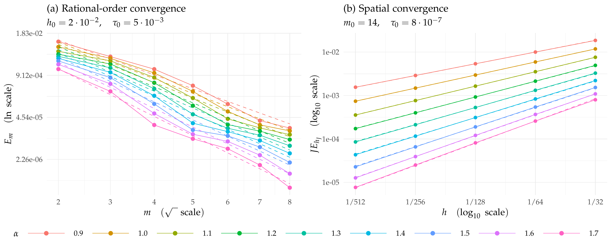

This page shows a brief description of the contents of this website.
The left panel shows the isolated rational-order study. The right panel shows the logarithmically corrected rough spatial errors. Colors identify the same alpha in both panels; dashed curves retain the prescribed reference rates.
Run the creation chunk manually after changing the figure. Knitting only displays the saved PNG.
library(ggplot2)
isolated <- readRDS(file.path("data_files", "isolated_m_results.rds"))
rough <- readRDS(file.path("data_files", "rough_h_as_in_mat_results.rds"))
alpha_vector <- rough$parameters$alpha
J_vector <- rough$parameters$J
axis <- rough$parameters$h
m_fixed <- rough$parameters$m
time_step <- rough$parameters$time_steps[1L]
alpha_colors <- setNames(scales::hue_pal()(length(alpha_vector)), as.character(alpha_vector))
figure_dir <- "data_files/rough_h_as_in_mat"
dir.create(figure_dir, recursive=TRUE, showWarnings=FALSE)
isolated_data <- isolated$results[isolated$results$alpha %in% alpha_vector, ]
isolated_data$alpha_label <- factor(isolated_data$alpha, levels=alpha_vector)
isolated_guides <- isolated_data
for(a in alpha_vector) {
ids <- which(isolated_data$alpha==a)
if(!length(ids)) next
model <- exp(-2*pi*sqrt(a/2)*sqrt(isolated_data$m[ids]))
isolated_guides$error[ids] <- mean(isolated_data$error[ids]/model)*model
}
shared_color_scale <- function() scale_color_manual(values=alpha_colors,
limits=as.character(alpha_vector), labels=paste0("$", formatC(alpha_vector, format="f", digits=1), "$"),
name="$\\alpha$", drop=FALSE)
latex_scientific <- function(x) {
exponent <- floor(log10(abs(x)))
sprintf("%g\\cdot10^{%d}", x/10^exponent, exponent)
}
panel_theme <- theme_minimal(base_size=11, base_family="serif") +
theme(plot.title=element_text(size=12), legend.position="bottom",
plot.background=element_rect(fill="white", colour=NA))
left_panel <- ggplot(isolated_data,
aes(sqrt(m), error, colour=alpha_label, group=alpha_label)) +
geom_line() + geom_point(aes(shape=resolved), size=2) +
geom_line(data=isolated_guides, linetype="dashed") +
scale_shape_manual(values=c(`FALSE`=1, `TRUE`=16), guide="none") +
scale_x_continuous(breaks=sqrt(sort(unique(isolated_data$m))),
labels=sort(unique(isolated_data$m))) +
scale_y_continuous(trans=scales::log_trans(base=exp(1)),
labels=scales::label_scientific()) +
shared_color_scale() +
labs(title="(a) Rational-order convergence",
x="$m\\quad(\\sqrt{\\phantom{x}}\\mbox{ scale})$",
y="$E_m\\quad(\\ln\\mbox{ scale})$",
subtitle=sprintf("$h_0=%s,\\quad\\tau_0=%s$",
latex_scientific(isolated$parameters$h), latex_scientific(isolated$parameters$tau))) + panel_theme
spatial_data <- expand.grid(row=seq_along(axis), column=seq_along(alpha_vector))
spatial_data$h <- axis[spatial_data$row]
spatial_data$error <- as.vector(rough$errors * J_vector)
spatial_data$alpha_label <- factor(alpha_vector[spatial_data$column], levels=alpha_vector)
spatial_guides <- spatial_data
for(j in seq_along(alpha_vector)) {
ids <- spatial_data$column==j
model <- axis^alpha_vector[j]
spatial_guides$error[ids] <- mean(spatial_data$error[ids]/model)*model
}
right_panel <- ggplot(spatial_data,
aes(h, error, colour=alpha_label, group=alpha_label)) +
geom_line(data=spatial_guides, linetype="dashed") +
geom_line() + geom_point() +
scale_x_log10(breaks=axis, labels=function(x) paste0("1/", round(1/x))) +
scale_y_log10() + shared_color_scale() +
labs(title="(b) Spatial convergence",
x="$h\\quad(\\log_{10}\\mbox{ scale})$",
y="$JE_{h_J}\\quad(\\log_{10}\\mbox{ scale})$",
subtitle=sprintf("$m_0=%d,\\quad\\tau_0=%s$", m_fixed, latex_scientific(time_step))) + panel_theme
# Build the layout on the TikZ device so LaTeX measures every label.
figure_stem <- file.path(figure_dir, "rational-and-spatial-convergence")
tex_file <- paste0(figure_stem, ".tex")
tikz_options <- options(tikzMetricsDictionary=file.path(tempdir(), "nap-tikz-metrics"))
tikzDevice::tikz(tex_file, standAlone=TRUE, width=10, height=4,
documentDeclaration="\\documentclass[tikz,border=0pt]{standalone}",
packages=c("\\usepackage{tikz}", "\\usetikzlibrary{calc}",
"\\usepackage[T1]{fontenc}", "\\usepackage[sc]{mathpazo}", "\\usepackage{amsmath}"))
tryCatch({
legend_plot <- ggplotGrob(left_panel +
guides(colour=guide_legend(nrow=1, byrow=TRUE, keywidth=grid::unit(1.9, "cm"))))
legend_index <- which(grepl("^guide-box", legend_plot$layout$name) &
vapply(legend_plot$grobs, inherits, logical(1), what="gtable"))
shared_legend <- legend_plot$grobs[[legend_index]]
panels <- lapply(list(left_panel, right_panel), function(p)
ggplotGrob(p + theme(legend.position="none")))
panels[[1]]$heights <- panels[[2]]$heights <-
grid::unit.pmax(panels[[1]]$heights, panels[[2]]$heights)
combined_convergence <- gridExtra::arrangeGrob(
gridExtra::arrangeGrob(grobs=panels, ncol=2), shared_legend, ncol=1,
heights=grid::unit.c(grid::unit(1, "null"), sum(shared_legend$heights)))
grid::grid.newpage()
grid::grid.draw(combined_convergence)
}, finally={
grDevices::dev.off()
options(tikz_options)
})
latex_log <- paste0(figure_stem, "-build.log")
status <- system2("pdflatex", c("-interaction=nonstopmode", "-halt-on-error",
paste0("-output-directory=", shQuote(figure_dir)), shQuote(tex_file)),
stdout=latex_log, stderr=latex_log)
if(status!=0L) stop("LaTeX figure compilation failed; see ", latex_log)
status <- system2("pdftoppm", c("-png", "-singlefile", "-r", "300",
shQuote(paste0(figure_stem, ".pdf")), shQuote(figure_stem)),
stdout=FALSE, stderr=FALSE)
if(status!=0L) stop("LaTeX figure PNG conversion failed.")
unlink(paste0(figure_stem, c(".aux", ".log", "-build.log")))